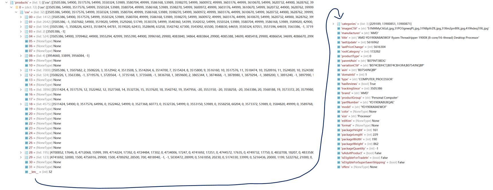

Data Cleaning
1. Cleaning PC Component Data (Python & SQL)
The python scripts can be found at data_clean/amazon folder on GitHub. And the cleaned data can be found at data/amazon.db.
1.1 Raw Data Overview in Python
1.2 Cleaned Dataset in SQLite
During cleaning, two wrong ASIN codes are corrected and one product with no historical data are removed. See commit 1dfef3 on GitHub.
All data of amazon products are stored in SQLite database with multiple tables. See EDA part for the definition of each SQL table and a table summary.
2. Cleaning Cryptocurrency Data
2.1. Cleaning Chia Data (Python Record Data)
The Python scripts can be found at data_clean/crypto/chia.py. And cleaned data can be found at data/chia.csv
The raw historical data of chia coin including price, market capacity, and network space are read by Python.
During the data cleaning, the timestamps(1616126400000) in time columns are converted to Date(YYYY-MM-DD) and the origin time columns are removed. All the 3 tables are merged into single table by Date with inner-join.
3. Cleaning Commodity Data (R Record Data)
The R scripts can be found at data_clean/commodity/clean.r. And cleaned data can be found at data/commodity.csv
The raw historical price data of 5 commodities including aluminum, copper, gold, silver, and crude oil are read by R. Because the earliest PC hardware data is from June 2015, all the commodities' data are only selected after 2015.
During the data cleaning, the Date columns are converted to 'Date' type in R and only the close price are kept. NA value in price columns are handled by removing the row. All the 5 commodities are merged into single table by Date with inner-join.
4. Cleaning Public View Data (Python & R Text Data)
The Python scripts in this section can be found at data_clean/news folder on GitHub.
4.1 Video list under Youtube channel (CSV Data)
Cleaned data can be found at data/channel_videos.csv and data/video_tags.csv.
The raw json data of 10 pages(50 videos per page) of videos under TechLinked channel are read by Python. And relevant information of the video such as video_id, published_at, title, description, and tags. Some promotion lines such as 'FOLLOW OTHER CHANNEL' or 'FOLLOW OUR ELSEWHERE' in description are removed. As a result, 796 videos are recorded in the csv file.
Also the tags column is separated into an individual csv file so that we can see the file overview on GitHub(the csv with descriptions are too large to be previewed on GitHub).
4.2 Comments under 175 videos about graphic card (Corpus Data)
Cleaned data can be found at data/comments.csv and data/comments_labeled.csv.
The earliest video selected was published on June 12th 2018. To see the trend of public view to graphic shortage, the published_week(the first day of the week published) are calculated from the column published_at. Also, comments with less than 20 characters or 5 words are treated as irrelevant and removed. As a result, 115526 comments are recorded in the csv file.
1000 comments are selected and manually labeled whether it's related to the graphic card topic. As a result, 113 comments are labelled as 1(relevant) and other comments are labeled as 0(irrelevant). CountVectorizer are used to vectorize the comments, the result vocab contains 3347 words. The manually labeled data can be found at data_clean/news/content_sample_labeled.csv.
Then a LinearSVC model is trained by the labeled comments and then used to predict the label of all other 110 thousands unlabeled comments. As a result, 10332 comments are labeled as 1(relevant to graphic card topic).
A further cleaning and transformation to the text data is performed by R. But the main purpose of it is to visualize the trend of keywords in time series, so this part will be shown in Exploring Data chapter.